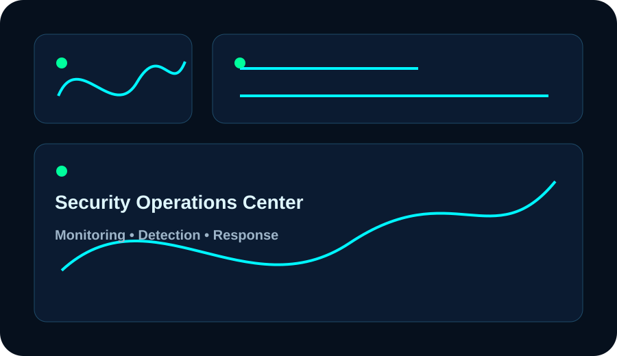

One technology partner for security, infrastructure and performance.
Designed to present Fast Tech Repair as a modern technology company while keeping services realistic, professional and clear.
Cybersecurity Operations
Security-focused services for monitoring, hardening and incident preparation.
- SIEM monitoring concepts
- Threat detection workflow
- Log review and analysis
- Security awareness support
Enterprise Infrastructure
Server, network and virtualization services for reliable business technology.
- Linux server deployment
- Proxmox and virtualization
- Secure networking
- Backup planning
High Performance Builds
Premium gaming PCs, workstations and custom systems built for speed and reliability.
- Gaming PC builds
- RTX workstations
- Cooling and airflow
- Hardware diagnostics
Built to look serious, technical and business ready.
The site uses a dark enterprise visual system, strong contrast, technical cards, scanning motion and structured content for a high-trust first impression.

Cybersecurity, servers, networks and custom systems.
Professional IT Services
Computer repair, laptop repair, data recovery support, Windows and Linux assistance, malware cleanup, upgrades and remote technical support.
Business Technology
CCTV installation, WiFi improvement, router configuration, secure networking, server setup, virtualization, backup planning and infrastructure support.